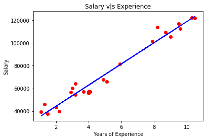
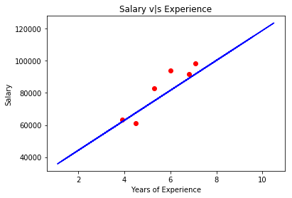

Simple Linear Regression
Importing The Libraries
import numpy as np
import matplotlib.pyplot as plt
import pandas as pd
Importing The Dataset
dataset = pd.read_csv('Salary_Data.csv')
X = dataset.iloc[:, :-1].values
y = dataset.iloc[:, -1].values
Splitting The Dataset into the Training Set and Test Set
from sklearn.model_selection import train_test_split
X_train,X_test,y_train,y_test = train_test_split(X,y,test_size=0.2,random_state=1)
print(X_train)
[[ 9.5]
[ 2. ]
[ 8.7]
[ 7.9]
[ 8.2]
[ 2.2]
[ 1.5]
[ 9. ]
[ 3. ]
[ 5.9]
[ 4.1]
[ 3.2]
[ 9.6]
[ 1.3]
[ 5.1]
[ 1.1]
[ 4.9]
[10.5]
[10.3]
[ 3.7]
[ 3.2]
[ 4. ]
[ 4. ]
[ 2.9]]
print(X_test)
[[5.3]
[7.1]
[3.9]
[6. ]
[4.5]
[6.8]]
print(y_train)
[116969. 43525. 109431. 101302. 113812. 39891. 37731. 105582. 60150.
81363. 57081. 54445. 112635. 46205. 66029. 39343. 67938. 121872.
122391. 57189. 64445. 56957. 55794. 56642.]
print(y_test)
[83088. 98273. 63218. 93940. 61111. 91738.]
Training the Simple Linear Regression model on the Training Set
from sklearn.linear_model import LinearRegression
regressor = LinearRegression()
regressor.fit(X_train,y_train)
LinearRegression(copy_X=True, fit_intercept=True, n_jobs=None, normalize=False)
Predicting the Test Set result
y_pred = regressor.predict(X_test)
Visualising the Training Set results
plt.scatter(X_train,y_train,color='red')
plt.plot(X_train,regressor.predict(X_train),color='blue')
plt.title('Salary v|s Experience')
plt.xlabel('Years of Experience')
plt.ylabel('Salary')
plt.show()

Visualising the Test Set results
plt.scatter(X_test,y_test,color='red')
plt.plot(X_train,regressor.predict(X_train),color='blue')
plt.title('Salary v|s Experience')
plt.xlabel('Years of Experience')
plt.ylabel('Salary')
plt.show()
